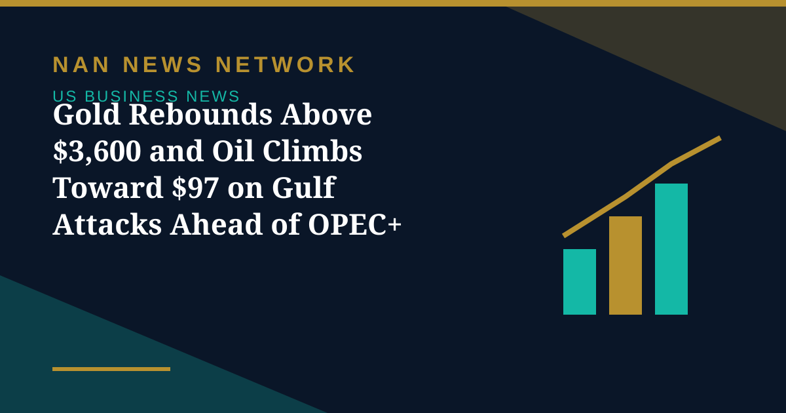

Gold Rebounds Above $3,600 and Oil Climbs Toward $97 on Gulf Attacks Ahead of OPEC+ Meeting

Gold rebounded and oil held its gains on Friday, November 27, as Wall Street prepared for an abbreviated post-Thanksgiving session, with commodities signalling a pivotal inflection point at the end of a volatile November, FXStreet reported.
Gold snaps back from its lows
Gold jumped 2.45 percent, or $87.69, to trade near $3,670.80 per ounce on Friday, staging a textbook technical rebound alongside a 6.75 percent surge in silver to $44.15, according to FXStreet. The metal had hit a 52-week low of $3,425.20 earlier in the week, and ING noted gold climbing back above $3,600 an ounce, on track for a weekly gain, as stronger equity markets and a softer U.S. dollar offered support. Markets still price a December Federal Reserve rate hike as close to certain, which keeps the dollar supported and limits gold's upside.
Oil climbs into the OPEC+ weekend
WTI crude climbed 1.90 percent to $85.76 a barrel, while ICE Brent extended gains for a fourth consecutive session on Friday, trading above $97 a barrel and heading for its first weekly gain this month, ING reported. Energy traders are positioning ahead of Sunday's November 29 OPEC+ ministerial meeting, where the group is expected to consider keeping current production quotas unchanged through January, although some members have pushed for higher quotas. The risk premium follows attacks on Saudi Arabia's Jazan refinery and on tankers in the Gulf, including the Strait of Hormuz, which have stoked supply fears. Brent has surged about 8 percent over three sessions, according to market reports.
Sources: FXStreet, November 27, 2026; ING Think, November 27, 2026
More on US Business News
- Black Friday Tests Retailers as Tight Budgets Meet AI-Savvy Shoppers
- U.S. Stock Futures Higher as AI Trade Steadies Into Thanksgiving Break
- S&P Puts Nvidia Rating on Downgrade Watch After Huang Reinstatement Saga
- October Core PCE Inflation Overshoots as Markets Price a Near-Certain December Fed Hike
- Dell Shares Fall Despite Strong Results and Lifted Outlook as AI Selloff Rolls On
- Thanksgiving Air Travel Set for 16-Year High With 417,775 Flights Forecast
- Bitcoin Falls Back Below $60,000 as Nvidia Rally Fades and ETF Outflows Hit Record
- CrowdStrike to Acquire Zscaler in $43.9 Billion All-Stock Deal
- Stocks Rebound Sharply Monday as Dow Surges 1,200 Points and Nvidia Jumps 30 Percent
- Stocks Enter Correction Heading Into Thanksgiving as S&P 500 Skid Hits Seven Days
- SoftBank's Son Explored a Roughly $1 Trillion SK Hynix Buyout, Then Dropped It, Report Says
- Wall Street Posts Worst Week Since April 2025 as Nasdaq Falls 10% on AI and Fed Fears
- Bessent Pushes Back on Bigger Fed Hike as Stocks Sink and Bitcoin Falls Below $60,000
- S&P 500 Falls for a Sixth Straight Day as Dow Drops 1,101 Points Below 50,000
- Intuit to Sell Mailchimp for About $3.68 Billion, a Third of What It Paid
- Walmart Beats With $188.8 Billion Quarter and Raises Full-Year Guidance
- Nasdaq Futures Jump as Anthropic's Debut Revives AI Stocks After S&P's Fifth Straight Loss
- Target and Lowe's Shares Fall After Earnings as Retail Results Test the Consumer
- Fed Minutes Due Today as Waller Floats a Half-Point December Hike
- Disney and Home Depot Both Beat Earnings Before the Open as Consumer Names Hold Up
- Oil Slips as Recovering Middle East Exports Blunt Gulf Tensions and IEA Sees a Surplus
- Chip Rout Drags US Futures Lower as Asia Markets Plunge Ahead of Nvidia Earnings
- New York Manufacturing Growth Slows Sharply as Empire State Index Falls to 7.8
- Nasdaq and S&P 500 Fall Friday as Producer Prices Jump 6.5%, Fastest Since 2022
- Nvidia Reports Earnings Tuesday as Investors Watch China Exposure and the CEO Search
- Anthropic Sets $70-$78 IPO Price Range Ahead of Nasdaq Debut on November 19
- FAA Ground Stop Halts All US Departures for Four Hours as 8,600 Flights Are Cancelled
- Microsoft Outage Knocks Out Outlook, Teams and Copilot for More Than 12 Hours
- Bitcoin Falls Below $70,000 for First Time Since August as Crypto Slides
- easyJet Shareholders Approve £5.7 Billion Apollo Takeover
- Treasury Yield Tops 5% as Markets Price in a December Fed Rate Hike
- Stocks Look to Rebound as Nasdaq Futures Rise 1.8% Despite Fed Rate-Hike Fears
- OpenAI Revenue Hit $10 Billion in Q3, but Losses Grew to $10.9 Billion, Report Says
- October CPI Rose 0.4% as Fed's Waller Urges a Rate Rise 'Sooner, Rather Than Later'
- Anthropic IPO Moves Forward With Plan to Sell Over 800 Million Shares at $70 to $78
- Nvidia Shares Slide as Board Opens Investigation Into CEO Jensen Huang
- Wall Street Futures Rally on Bargain-Hunting as Oil Falls; CPI Due Tuesday
- Nasdaq Enters Correction as Tech Sell-Off Wipes $2.3 Trillion in a Week
- Berkshire Hathaway Operating Earnings Fall 5.8% as Buybacks Hit $9.6 Billion
- Tech Stocks Stage Partial Rebound as Nasdaq Rises 1.1% After Thursday's Rout
- Microsoft Winds Down Oracle AI Cloud Deal as Older Nvidia Chips Lose Their Fit
- US Adds 165,000 Jobs in October, Smashing Forecasts as Unemployment Eases to 4.1%
- Bank of England Raises Rates to 4% in First Hike Since 2023, Warns More May Follow
- Wall Street Rallies After the Midterms: Dow Jumps 1,569 Points in Its Best Day Since April 2025
- October Jobs Report Due Friday: Economists Expect About 65,000 New Jobs as the Fed Watches
- US Futures Plunge, Then Rebound, as Democrats Sweep Congress
- Wall Street on Election Eve: Dow Slips, S&P and Nasdaq Gain Ahead of Results
- Wall Street Mixed on Election Day as Nasdaq Sits in Correction and Oil Swings
- Pfizer Raises 2026 Forecast After Third-Quarter Beat Led by Eliquis and Cancer Drugs
- Berkshire Hathaway Enters Earnings Week Under Scrutiny as GEICO Weakens
- Wall Street Futures Rebound After a Brutal October for Tech Stocks
- S&P Downgrades Meta's Credit Outlook to Negative After $95 Billion AI Debt Plan
- Week Ahead: Apple, Palantir and AMD Earnings Plus Jobs Report Test an AI-Wary Market
- October Ends in the Red for Tech: Nasdaq Down 5.3% for the Month as Investors Rotate to Defensives
- Exxon and Chevron Beat Profit Forecasts as a $6.3 Billion Binance Hack Hits Crypto Stocks
- Stocks Fall Thursday as Alphabet's Worst Day Ever Drags the Nasdaq Down 1.4%
- US Labor Costs Rose 0.8% in Q3 as Wage Growth Slowed, Easing — but Not Erasing — Inflation Fears
- Fed Holds Rates at 3.75%–4% in 10–2 Vote as Warsh Says Politics Played No Role
- US Economy Grew 3.4% in Q3, Fastest in a Year, Beating Forecasts
- Wall Street Rallies for Second Day as AI Stocks Lead Ahead of Fed Decision
- Fed Decision Day: Markets Price a Hold as Warsh Faces First Big Test
- Anthropic IPO Filing Lifts Stocks as Wall Street Rallies
- Broadcom's $63 Billion Financing Powers Anthropic Technology Deal
- Wall Street Heads Into Fed Week as Oil Near $117 and Stocks Slip
- Trend Hedge Funds Suffer Worst Week Since 2024 as AI Stocks Slide, Goldman Says
- Meta Lifts 2026 AI Spending Toward $145 Billion and Adds a Nonvoting Stock Class
- OpenAI Nears a $30 Billion Round at a $1.25 Trillion Valuation, Reports Say
- Rivian Buys UK Startup Third Dimension to Build Its Robotaxi Simulator